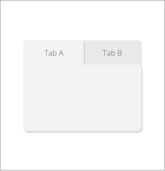
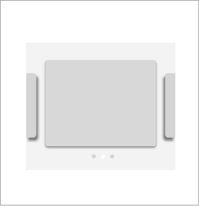
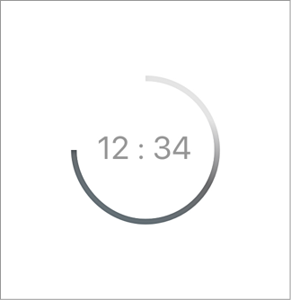

Some of you may have heard about the Daily UI challenge where some of the world’s top UI designers create a daily UI design for 100days and share on Dribbble. Intrigued, I embarked on that challenge myself. In the beginning, it was exciting. I got a real hang of Sketch.app and was creating screens after screens in a swift! The momentum carried on till Day #30.
Here’s a problem. It wasn’t clear on what design problem was I solving, why I chose those UI patterns, and what’s the end goal of the 30 screens I’ve created! I couldn’t imagine myself creating another 70 screens in the same manner. That’s simply counter productive. Knowledge, was what I needed. That got me to study an online course on UI Design Patterns with The Interaction Design Foundation. To apply what I’ve learnt, I breakdown the following designs with a brief analysis on each design pattern that was used.
UI Pattern: Tabbed Navigation
Design Problem
The users can choose between these 2 account types to sign up for. There needs to be a way to separate the content into 2 sections and accessed using a flat navigation structure that gives a clear indication of its current location.
Design Solution
Navigation tabs provide a clear visual indication of what content can be found on a website and places the current location in context by highlighting it. In this case, users can easily switch back and forth from “For Personal” to “For Business” tab to make a quick comparison.
UI Pattern: Carousel
Design Problem
The users have stored multiple cards in the e-wallet and need to choose which card to use. They also need to see the details of the cards to differentiate them. What is the most efficient way for the users to browse and select the card that they need?
Design Solution
A carousel optimizes screen space by displaying only a subset of images from a collection of images in a cyclic view. The navigational controls on a carousel suggests additional content that is not currently visible, this encourages the user to continue exploring.
UI Pattern: Progress Indicator
Design Problem
This countdown timer is used to track time, and the UI must allow users do that intuitively.
Design Solution
Visibility of system status is one of the most important rules of UI design. Having a progress bar gives feedback to the users in 3 categories:
1. Current Status: Time is running.
2. Outcome: 70% time is gone.
3. Future status: 30% time left.
With the familiarity of UI patterns, design decisions can be made faster and more effective by using these recurring patterns to solve common design problems. Adopting existing UI patterns also removes the need to reinvent the wheel that may backfire to confuse users. From time to time, we should also break some boundaries to create new patterns unique to certain apps.